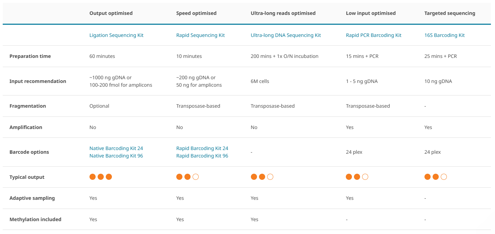

I’m meeting with Andrea tomorrow to discuss the SIFP project, so I spent some time researching the Nanopore direct sequencing workflow and associated costs.
Multiplexing:
PromethION and MionION platforms support multiplexing, where DNA is tagged with sample-specific barcodes during library prep, allowing multiple samples to be run simultaneously on a single flow cell. Since flow cells are the most expensive component of nanopore sequencing by far, multiplexing could dramatically reduce the sequencing cost per sample.
According to Rubi, Knowles, and Dantzer (2020), while recommended minimum read depth for methylation analysis is 10X, their hDNA samples showed little difference in # of CpG positions for a minimum read depth of 5X and 10X. So our goal should be a minimum of 10X depth, but lower could be acceptable?
(deng2024?) used a PromethION for WGS of the human genome and multiplexed 3 samples per cell, incorporating a cell wash to improve performance, and generated 154 Gb of output with a final mean read depth of 12X. This tracks with ONT's specifications of 100-200 Gb output gDNA reads from a PromethION flow cell. NOTE though that the human genome is *much* larger than a coral genome.
If we assume an output of 150 Gb (150,000 Mb), how many samples could be multiplexed while maintaining minimum read depth?
Human genome: 3,000 Mb
10X read depth: 30,000 Mb
Sequencing output: 150,000 Mb
Multiplexing max = 5 samples/flow cell
Coral genome: 500 Mb
10X read depth: 5,000 Mb
Sequencing output: 150,000 Mb
Multiplexing max = 30 samples/flow cell
Say we want 3 time points (e.g., 100yo, 50yo, <20yo). Probably need a minimum of n=5 for each, so minimum of N=15.
I think we'd easily be able to run all 15 samples on a single flow cell! Since flow cells are only sold in packs of 4, we'll also end up with extra to do more sequencing if desired/possible.
Choosing library prep

Rapid (ligation-free) library prep kit seems best. Of the methylation-friendly options, it requires the least input DNA (still kind of high though? 100ng?). It also has barcode options to support multiplexing!
Cost estimate:
Assuming minimum N=15 on a PromethION, incorporating multiplexing to reduce cost/sample.
| Item | # rxns/unit | Price ($/unit) | # units | Total cost |
| Rapid Barcoding Kit 96 V14 | 96 | 1100 | 1 | 1100 |
| PromethION Flow Cell Packs (R10.4.1) | 1 pack: 4 cells | 3980 | 1 | 3980 |
| Flow Cell Wash Kit | 6 | 115 | 1 | 115 |
| 5,195 |
So estimated cost of library prep and sequencing for N=15 samples on a PromethION sequencing platform is $5,195. Note that this could be reduced by a few hundred dollars by buying a 24-reaction library prep kit, but it's dramatically more cost effective to buy the 96-reaction kit. That also gives us plenty of wiggle room for unsuccessful library prep or sequencing.
Note that this doesn't take DNA extraction and QC into account. I'll need to talk to Andrea about this portion since the LAB has some community-available resources and the number of samples I'll extract/QC will be strongly influenced by extraction success.